L2 DynamoDB
L2 DynamoDB Overview
- Fully Managed, Highly available with replication across 3 AZ
- NoSQL database - not a relational database
- Scales to massive workloads, distributed database
- Millions of requests per seconds, trillions of row, 100s of TB of storage
- Fast and consistent in performance (low latency on retrieval)
- Integrated with IAM for security, authorization and administration
- Enables event driven programming with DynamoDB Streams
- Low cost and auto scaling capabilities
1-1 DynamoDB - Basics
- DynamoDB is made of tables
-
Each table has a primary key (must be decided at creation time)
-
Each table can have an infinite number of items (= rows)
- Each item has attributes (can be added over time can be null)
- Maximum size of a item is 400KB
- Data types supported are:
- Scalar Types: String, Number, Binary, Boolean, Null
- Document Types: List, Map
- Set Types: String Set, Number Set, Binary Set
1-2 DynamoDB — Primary Key
- Option 1: Partition key only (HASH)
- Partition key must be unique for each item
- Partition key must be "diverse" so that the data is distributed
- Example: user id for a users table
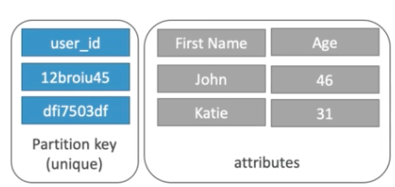
1-3 DynamoDB — Primary Keys
- Option 2: Partition key + Sort Key
- The combination must be unique
- Data is grouped by partition key
- Sort key == range key
- Example: users-games table
user_idfor the partition keygame_idfor the sort key
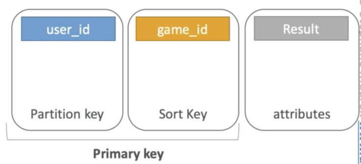
partition key and sort key can be duplicate, but the combination must be unique
1-4 DynamoDB Partition Keys exercise
- We're building a movie database
-
What is the best partition key to maximize data distribution?
movie_idproducer_nameleader_actor_namemovie_language
-
movie_id has the highest cardinality(unqiue) so it's a good candidate
moving_languagedoesn't take many values and may be skewed towards English so it's not a great partition key
1-5 DynamoDB in Big Data
Common use cases include:
- Mobile apps
- Gaming
- Digital ad serving
- Live voting
- Audience interaction for live events
- Sensor networks
- Log ingestion
- Access control for web-based content
- Metadata storage for Amazon S3 objects
- E-commerce shopping carts
- Web session management
Anti Pattern
- Pre-written application tied to a traditional relational database: use RDS instead
- joins or complex transactions
- Binary Large Object (BLOB) data: store data in S3 & metadata in DynamoDB
- Large data with low I/O rate: use S3 instead
DynamoDB is to be more for data is hot and smaller
S3 is goiing to be colder but bigger
2、DynamoDB RCU & WCU
2-1 DynamoDB Provisioned Throughput
- Table must have provisioned read and write capacity units
- Read Capacity Units (RCU): throughput for reads
- Write Capacity Units (WCU): throughput for writes
- Option to setup auto-scaling of throughput to meet demand
- Throughput can be exceeded temporarily using "burst credit"
- If burst credit are empty, you'll get a "ProvisionedThroughputException".
- It's then advised to do an exponential back-off retry
2-2 DynamoDB — Write Capacity Units
- One write capacity unit represents one write per second for an item up to 1 KB in size.
-
If the items are larger than 1 KB, more WCU are consumed
-
Example 1: We write 10 objects per seconds of 2 KB each.
We need 2 * 10 = 20 WCU
- Example 2: we write 6 objects per second of 4.5 KB each
We need 6 * 5 = 30 WCU #(4.5 gets rounded to the upper KB)
- Example 3: we write 120 objects per minute of 2 KB each
We need 120 / 60 * 2 = 4 WCU
2-3 Strongly Consistent Read vs Eventually Consistent Read
Eventually Consistent Read:
If we read just after a write, it's possible we'll get unexpected response because of replication
Strongly Consistent Read:
If we read just after a write, we will get the correct data
By default DynamoDB uses Eventually Consistent Reads, but Getltem, Query & Scan provide a "ConsistentRead" parameter you can set to True
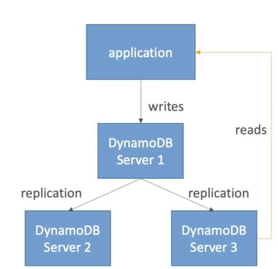
2-3 DynamoDB Read Capacity Units
- One read capacity unit represents one strongly consistent read per second, or two eventually consistent reads per second, for an item up to 4 KB in size.
- If the items are larger than 4 KB, more RCU are consumed
1 strongly consistent read/s
2 eventually consistent reads/s
4kb up
- Example 1: 10 strongly consistent reads per seconds of 4 KB each
We need 10 * 4 KB / 4 KB = 10 RCU
- Example 2: 16 eventually consistent reads per seconds of 12 KB each
We need (16 / 2) * ( 12 / 4 ) = 24 RCU
- Example 3: 10 strongly consistent reads per seconds of 6 KB each
We need 10 * 8 KB / 4 = 20 RCU (we have to round up 6 KB to 8 KB)
2-4 DynamoDB -Throttling
- If we exceed our RCU or WCU, we get ProvisionedThroughputExceededExceptions
-
Reasons:
- Hot keys / partitions: one partition key is being read too many times (popular item for ex)
- Very large items: remember RCU and WCU depends on size of items
-
Solutions:
- Exponential back-off when exception is encountered (already in SDK)
- Distribute partition keys as much as possible
- If RCU issue, we can use DynamoDB Accelerator (DAX)
2-5 on-demand RCU and WCU
Select on-demand if you want to pay only for the read and writes you perform, with no capacity planning required. It's pretty expensive
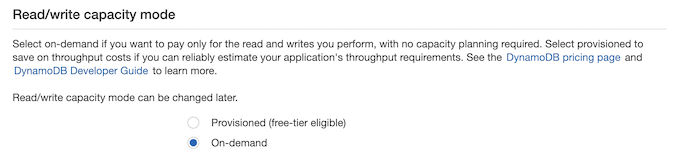
2-6 Capacity calculator
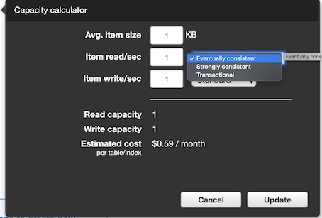
3、DynamoDB Partitions
3-1 DynamoDB - Partitions Internal
- You start with one partition
-
Each partition:
- Max of 3000 RCU / 1000 WCU
- Max of 10GB
-
To compute the number of partitions:
-
By capacity:
(TOTAL RCU / 3000) + (TOTAL WCU / 1000) - By size:
Total Size / 10 GB - Total partitions =
CEILING(MAX(Capacity, Size)) - WCU and RCU are spread evenly between partitions
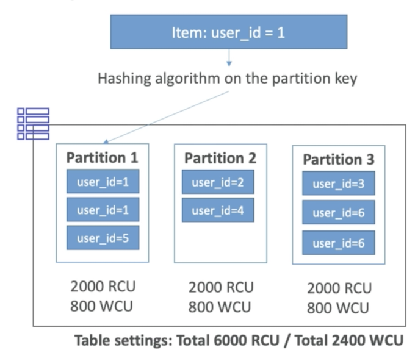
4、DynamoDB APIs (ADUS)
4-1 DynamoDB — Writing Data
- PutItem - Write data to DynamoDB (create data or full replace)
- Consumes WCU
- UpdateItem — Update data in DynamoDB (partial update of attributes)
- Possibility to use Atomic Counters and increase them
- Conditional Writes:
- Accept a write / update only if conditions are respected, otherwise reject
- Helps with concurrent access to items
- No performance impact
4-2 DynamoDB — Deleting Data
-
Deleteltem
- Delete an individual row
- Ability to perform a conditional delete
-
DeleteTable
- Delete a whole table and all its items
- Much quicker deletion than calling Deleteltem on all items
4-3 DynamoDB — Batching Writes
-
BatchWriteltem
- Up to 25 Putltem and / or Deleteltem in one call
- Up to 16 MB of data written
- Up to 400 KB of data per item
-
Batching allows you to save in latency by reducing the number of API calls done against DynamoDB
- Operations are done in parallel for better efficiency
- It's possible for part of a batch to fail, in which case we have the try the failed items (using exponential back-off algorithm)
4-4 DynamoDB — Reading Data
-
GetItem:
- Read based on Primary key
- Primary Key = HASH or HASH-RANGE
- Eventually consistent read by default
- ption to use strongly consistent reads (more RCU - might take longer)
- ProjectionExpression can be specified to include only certain attributes
-
BatchGetltem:
- Up to 100 items
- Up to 16 MB of data
- Items are retrieved in parallel to minimize latency
4-5 DynamoDB — Query
- Query returns items based on:
- PartitionKey value (must be = operator)
- SortKey value (=, <, <=, >, >=, Between, Begin) — optional
- FilterExpression to further filter (client side filtering)
Query by PartitionKey
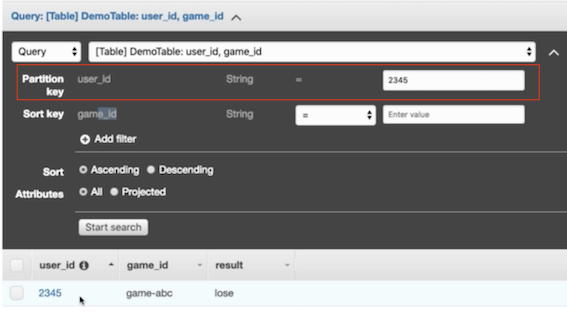
Query by PartitionKey + SortKey
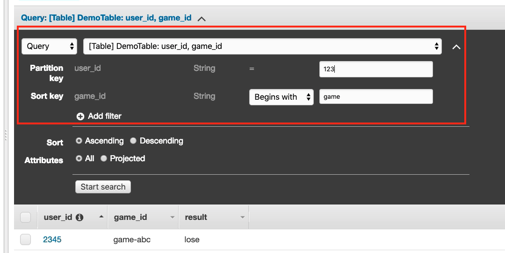
The only thing you can query is PartitionKey and SortKey
You could have filter at the very end and it's client side filtering
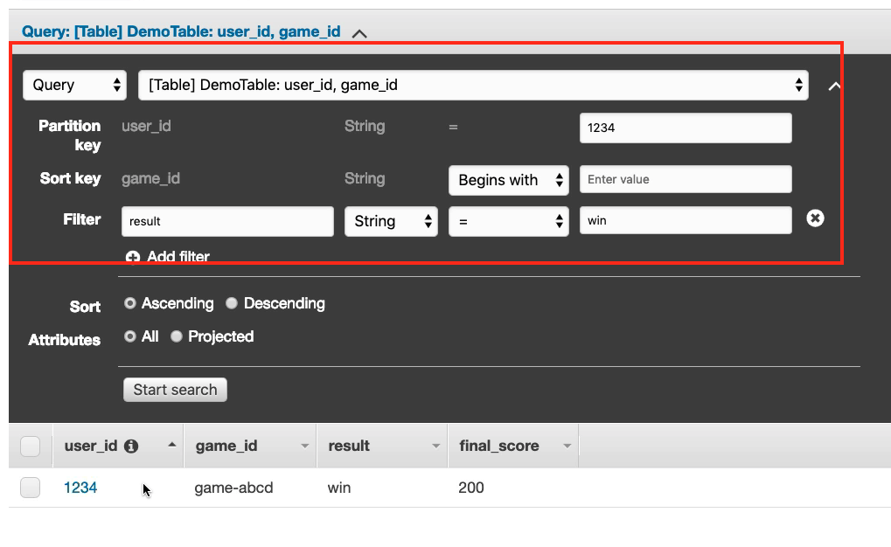
-
Returns:
- Up to 1 MB of data
- Or number of items specified in Limit
-
Able to do pagination on the results
- Can query table, a local secondary index, or a global secondary index
4-6 DynamoDB - Scan
- Scan the entire table and then filter out data (inefficient)
- Returns up to 1 MB of data use pagination to keep on reading
- Consumes a lot of RCU
- Limit impact using Limit or reduce the size of the result and pause
-
For faster performance, use parallel scans:
- Multiple instances scan multiple partitions at the same time
- Increases the throughput and RCU consumed
- Limit the impact of parallel scans just like you would for Scans
-
Can use a ProjectionExpression ± FilterExpression (no change to RCU)
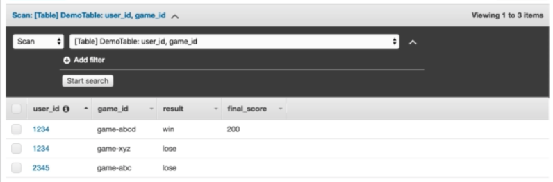
5、DynamoDB Indexes: LSI & GSI
5-1 DynamoDB — LSI (Local Secondary Index)
- Alternate range key for your table, local to the hash key
- Up to five local secondary indexes per table.
- The sort key consists of exactly one scalar attribute.
- The attribute that you choose must be a scalar String, Number, or Binary
- LSI must be defined at table creation time
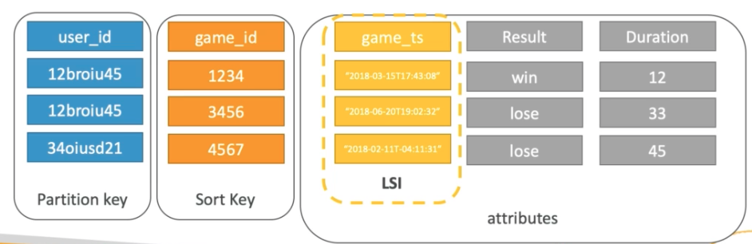
Create local secondary indexex with partition key + Sort key
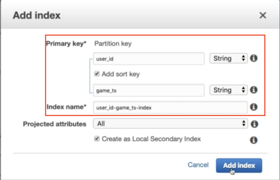
LSI must be defined at table creation time
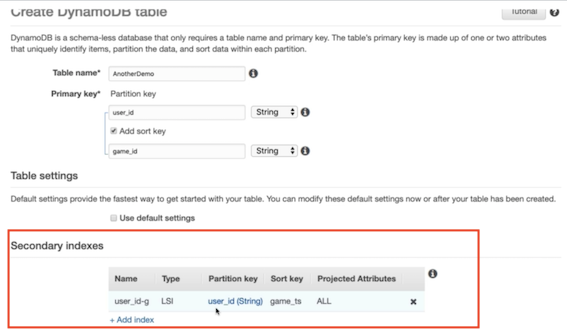
instead Query table, you can query index
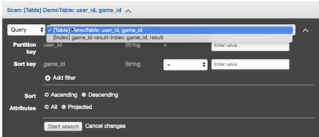
5-2 DynamoDB — GSI (Global Secondary Index)
- To speed up queries on non-key attributes, use a Global Secondary Index
- GSI = partition key ± optional sort key
-
The index is a new "table" and we can project attributes on it
- The partition key and sort key of the original table are always projected (KEYS_ONLY)
- Can specify extra attributes to project (INCLUDE)
- Can use all attributes from main table (ALL)
-
Must define RCU /WCU for the index
- Possibility to add / modify GSI (not LSI)
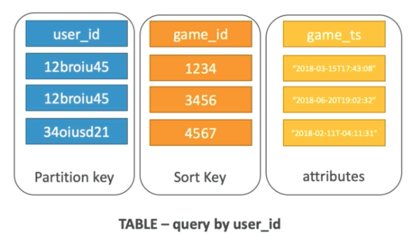
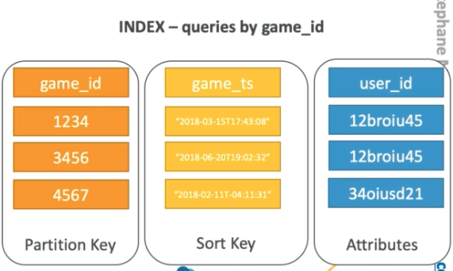
partition key + Sort key
Add RCU /WCU for the index
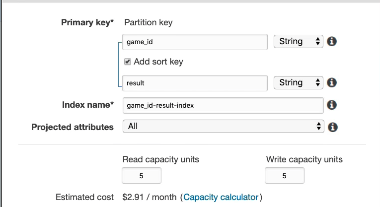
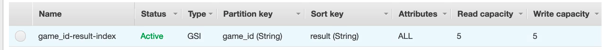
6、DynamoDB DAX
- DAX = DynamoDB Accelerator
- Seamless cache for DynamoDB, no application re-write
- Writes go through DAX to DynamoDB
- Micro second latency for cached reads & queries
- Solves the Hot Key problem (too many reads)
- 5 minutes TTL for cache by default
- Up to 10 nodes in the cluster
- Multi AZ (3 nodes minimum recommended for production)
- Secure (Encryption at rest with KMS,VPC, IAM, CloudTrail...)
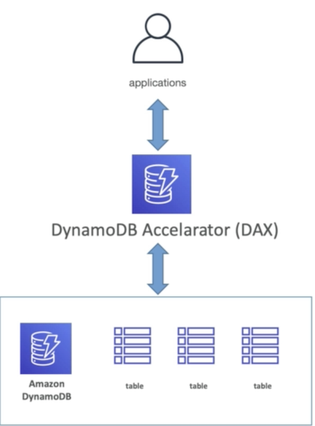
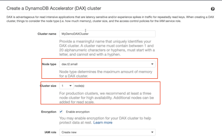
7、DynamoDB Streams
- Changes in DynamoDB (Create, Update, Delete) can end up in a DynamoDB Stream
-
This stream can be read by AWS Lambda, and we can then do:
- React to changes in real time (welcome email to new users)
- Create derivative tables / views
- Insert into ElasticSearch
-
Could implement Cross Region Replication using Streams
- Stream has 24 hours of data retention 】
- Configurable batch size (up to 1,000 rows, 6 MB)
7-1 DynamoDB Streams Kinesis Adapater
- Use the KCL library to directly consume from DynamoDB Streams
- You just need to add a "Kinesis Adapter" library
- The interface and programming is exactly the same as Kinesis Streams
- That's the alternative to using AWS Lambda
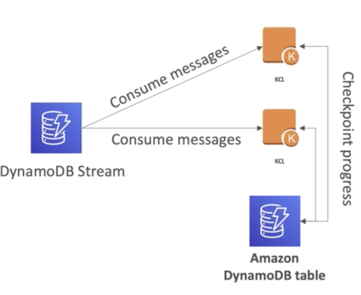
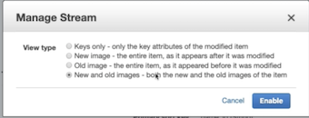
8、DynamoDB TTL (Time to Live)
- TTL = automatically delete an item after an expiry date / time
- TTL is provided at no extra cost, deletions do not use WCU / RCU
- TTL is a background task operated by the DynamoDB service itself
- Helps reduce storage and manage the table size over time
- Helps adhere to regulatory norms
- TTL is enabled per row (you define a TTL column, and add a date there)
- DynamoDB typically deletes expired items within 48 hours of expiration
- Deleted items due to TTL are also deleted in GSI / LSI
- DynamoDB Streams can help recover expired items
TTL is enabled per row
Add attribute: expire_on
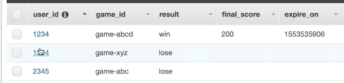
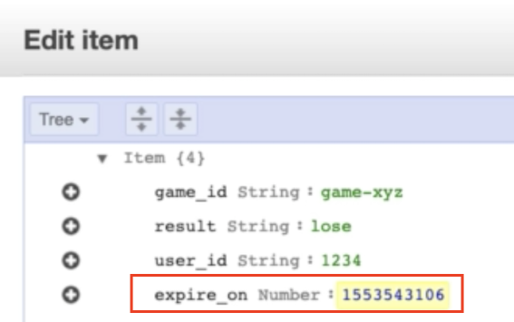
https://www.epochconverter.com/
Enable TTL on table level
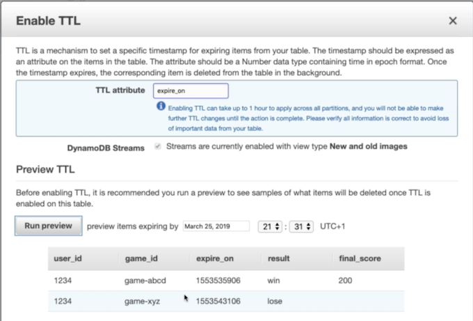
9、DynamoDB — Security & Other Features
9-1 Security:
- VPC Endpoints available to access DynamoDB without internet
- Access fully controlled by IAM
- Encryption at rest using KMS
- Encryption in transit using SSL /TLS •
9-2 Backup and Restore feature available
- Point in time restore like RDS
- No performance impact
9-2 Global Tables
- Multi region, fully replicated, high performance
Amazon Database Migration Service (DMS) can be used to migrate to DynamoDB (from Mongo, Oracle,TlySQL, S3, etc...)
- You can launch a local DynamoDB on your computer for development purposes
10、DynamoDB: Storing Large Objects
10-1 DynamoDB Storing large objects
- Max size of an item in DynamoDB = 400 KB
- For large objects, store them in S3 and reference them in DynamoDB
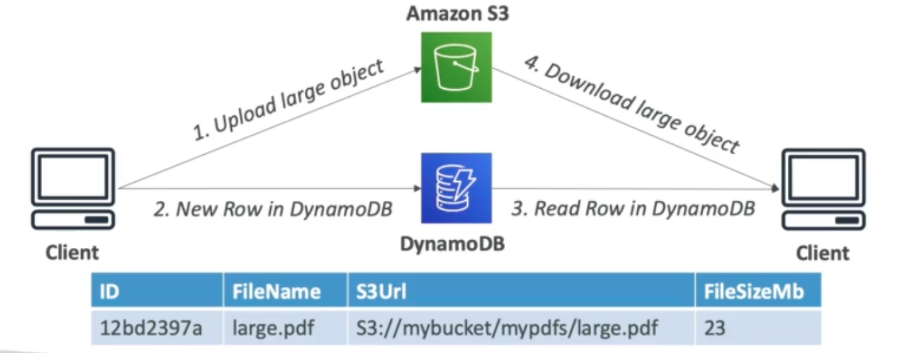
10-2 DynamoDB - Price comparison for 300 KB
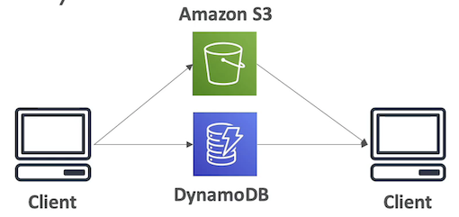
-
Amazon S3 (300KB of storage)
$0.0000069storage per month$0.0000050initial PUT$0.0000004per GET
-
DynamoDB (< 1 KB of storage)
$0.0006500for one WCU per month$0.0001300for one RCU per month$0.00000025storage per month
-
Assuming I write, 100 reads per month:
$0.00119215per month
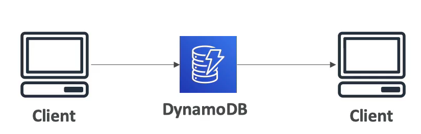
-
DynamoDB (300 KB of storage)
$0.195for300WCU per month$0.004940for38RCU per month$0.000075storage per month
-
Assuming I write, 100 reads per month:
- Storage is 11x more expensive
- WCU + RCU are under-used
-
Even for items that fit in DynamoDB, if under-used, S3 + DynamoDB is a solution
11 AWS ElastiCache Overview
- The same way RDS is to get managed Relational Databases...
- ElastiCache is to get managed Redis or Memcached
- Caches are in-memory databases with really high performance, low latency
- Helps reduce load off of databases for read intensive workloads
- Helps make your application stateless
- Write Scaling using sharding
- Read Scaling using Read Replicas
- Multi AZ with Failover Capability
- AWS takes care of OS maintenance / patching, optimizations, setup, configuration, monitoring, failure recovery and backups
11-1 Redis Overview
- Redis is an in-memory key-value store
- Super low latency (sub ms)
- Cache survive reboots by default (it's called persistence)
- Great to host
- User sessions
- Leaderboard (for gaming)
- Distributed states
- Relieve pressure on databases (such as RDS) Pub / Sub capability for messaging
- Multi AZ with Automatic Failover for disaster recovery if you don't want to lose your cache data
- Support for Read Replicas
11-2 Memcached Overview
- Memcached is an in-memory object store(Like S3)
- Cache doesn't survive reboots
- Use cases:
- Quick retrieval of objects from memory
- Cache often accessed objects
- Overall, Redis has largely grown in popularity and has better feature sets than Memcached.
- I would personally only use Redis for caching needs.